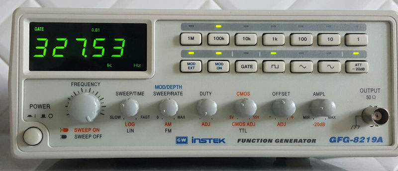

1. רקע כללי וטכנולוגי
מהו מחולל אותות?
מחולל אותות (Function Generator) הוא מכשיר אלקטרוני המייצר אותות מתח חילופין המשתנים בזמן בצורות גל שונות (סינוס, ריבוע, משולש) בתדר ובאמפליטודה ניתנים לשינוי. המכשיר משמש כמקור העירור הראשי לניסויים במעגלים חשמליים, ומאפשר לבדוק את תגובת המעגלים לאותות כניסה מגוונים.
הטכנולוגיה של ה-GFG-8219A
ה-GFG-8219A הוא מכשיר אנלוגי המבוסס על מתנד פנימי מבוקר מתח (VCO). האות הנוצר מכיל תמיד עיוותים קטנים ביחס לצורת הגל התיאורטית. סטייה זו מוגדרת כ-THD (Total Harmonic Distortion), והיא עומדת על שברי אחוזים מהגל המקורי במכשיר זה. המכשיר משלב גם מונה תדר דיגיטלי מבוסס מיקרו-מעבד המציג את תדר המוצא בזמן אמת, ומאפשר מדידת תדרים חיצוניים.
2. מבנה המכשיר וחיבורים
להלן צילום צבעוני של המכשיר וכן שרטוט המבט החזיתי והאחורי של דגם GFG-8219A. המספרים בשרטוטים ממופים ישירות לטבלת הבקרות להלן.



3. בקרות עיקריות ומפרט הבקרים
הטבלה הבאה מפרטת את כל מקשי, בוררי וחיבורי המכשיר בהתאם למיפוי הפיזי של היצרן ובדומה למחברות המעבדה:
4. הדגמות מעשיות ומדריכי ניסוי (שלב-אחר-שלב)
לחצו על כל אחת מההדגמות המעשיות להלן כדי לראות את שלבי העבודה המדויקים במעבדה:
5. טיפים מעשיים של זהב למדידה נכונה במעבדה
6. כללי בטיחות ופתרון תקלות
7. סרטוני הדרכה והדגמה מעשיים
לפניכם סרטוני הדרכה והדגמה שימושיים ב-YouTube לעבודה נכונה עם המכשיר ומחוללי אותות במעבדה:
-
▶️ מדריך מעבדה אוניברסיטאי לשימוש במחולל אותות (University of Nottingham):
סרטון הדרכה מעולה המציג את מושגי היסוד, סוגי הגלים, כיוון תדר ואמפליטודה, וחיבור למעגל.
צפייה בסרטון ההדרכה ב-YouTube ← -
▶️ מלכודת המדידה של אוסילוסקופ ומחולל אותות (EEVblog #652):
סרטון חובה להבנת סוגיית עכבת המוצא (\( 50\,\Omega \)), השפעת תיאום עכבות ומניעת טעויות מדידה במעבדה.
צפייה בסרטון ההסבר ב-YouTube ←